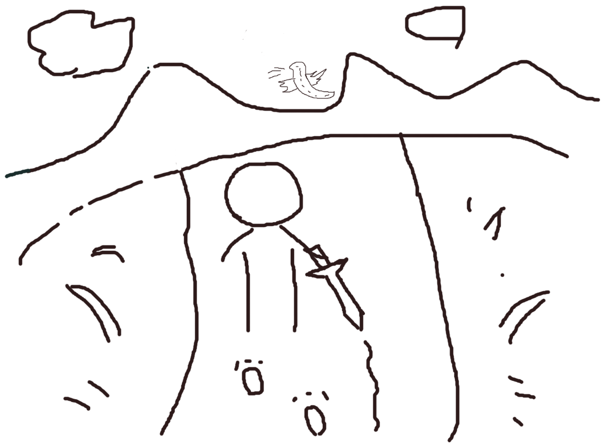

前言
7 年就是一辈子。从 2018 年在 smallyu.net 上发布第一篇博客文章开始，到 2025 年学习王垠老师的计算机科学课，已经整整 7 年的时间。
这 7 年的时间里，我从大学四年级的实习，到毕业后先后进入 6 家公司工作，再到最后因为裁员而失业，经历了很多有趣或者痛苦的事情，这 7 年是完整的一辈子，也就是失败朋克的一辈子。
失败朋克这个词，来自赛博朋克世界，就像天空里飞着飞船、大街小巷都是亮光闪闪的电子屏幕，而有一些人，在如此科幻场景的世界里，却生活在暗无天日的、拥挤的贫民窟里，过着拮据的日子。
我的博客文章列表，就是典型的失败朋克：谈论着高科技的区块链技术，以太坊、EVM、共识、PoS、去中心化、加密、ZK……一大堆高大上的名词，而我本人的职场道路却非常坎坷，连续遇到糟糕的团队，反复经历裁员、跳槽、辞职、裸辞……居住在很小的租来的房子里，没有稳定的收入，连普通的有尊严的工作都找不到。
某一天清晨从睡梦中醒来，我忽然觉得应该删减一些博客上的文章，于是去掉了所有包含真实信息的文章，只保留了一些纯技术类的讨论，不再提及人生经历、梦想、生活等话题。而这本书《失败朋克的一辈子》，就是那些删减掉的内容合集，包含了真实的公司名称，以及巨大的情绪波动等内容。
为什么是现在做一个总结，而不是去年或者明年？非要说原因的话，大概就是最近学习了王垠老师的计算机学科课吧。我人生中第一次参加培训班，是在大学里，大三一整年，都在坐一小时公交车去培训班上课的路上，那一次的培训彻底改变了我的人生，让我真正踏上程序员的旅程，否则我的职业方向会很迷茫，不写代码我想想不到自己还会做什么工作。
毕业 6 年后，我第二次参加培训班，也就是王垠老师的课，我觉得是一个非常好的契机，能给我一些自信，让我做出一些改变。课程内容会对我以后的学习和工作带来怎样的影响，现在是不清楚的，但是我希望这能是一个好的开始，我也相信在经历了诸多不顺的工作之后，加上最近的学习，面对以后的职业生涯会更加游刃有余。世界上最顶尖的教育尚且体验过了，还担心什么呢？
《失败朋克的一辈子》这本书收录了我过去 7 年的完整人生经历和心态变化。
前世
失败朋克在这一辈子之前，非常早期的文字。那个时候还很小……
莫泊桑《项链》一文中的不合理情节
2014-02-13
高中年级的小说选修课本里有一篇叫《项链》的小说，世界小说巨匠莫泊桑写的，上课的时候就发现有些不合常理的情节，或者说剧情需要，巧合性的情节，现在回忆着写一下。
首先罗塞尔太太丢失项链就是一个相当巧合的巧合。她晚会后匆匆忙忙离开会场，之后顺着马路租车子，然后打车回家，官方解释说这是为后文罗塞尔太太丢失项链埋下的伏笔，罗塞尔太太因为贫穷，所以慌张离开，是为了别人不识破真相。确实是相当精妙的构思，合情合理合逻辑。可问题来了，既然他们穷，那么一定会格外珍惜这串价格不菲的项链，慌忙之中，他们没有再注意一下项链吗？或许可以模糊的理解成他们真的大意了？（剧情需要）
第二个是关于罗塞尔太太陪项链的事。当时罗塞尔太太和她的丈夫几乎已经可以确定项链是找不到了，便决定买一条真的赔给弗莱士杰太太（就是借的项链的主人）。问题来了，它们为什么要隐瞒呢？她们既然已经决定要赔了，为什么不大大方方地告诉弗莱士杰太太真相呢？被身份的卑微和贫穷让他们自卑到不敢说吗？明明白白的说，我丢了你的项链，不过你别担心，我会再买一条还给你的。这样不可以吗？如果这样的话，主人公的命运会怎样发展呢？（剧情需要）
第三个是罗塞尔太太还了真项链之后。罗塞尔太太还项链之后和弗莱士杰太太竟然十年没有见面吗？！原文里说，十年后，罗塞尔太太在街上看到了正在散步的弗莱士杰太太，由于已经还情了债款，便大大方方的上前打招呼。弗莱士杰太太在散步，说明罗塞尔太太和弗莱士杰太太住的差不是很远，原来罗塞尔太太躲了弗莱士杰太太整整十年啊！？（不合常理）
最后一个，让人奇怪的情节。文章的最后弗莱士杰太太揭露真相，说，“可怜的马蒂尔德！我原来的那串项链是假的呀！”问题：为什么弗莱士杰太太要说出真相，告诉罗塞尔太太原来的项链是假的呢？她完全可以不说出来，把那条项链据为己有。现在说出来了，猜猜罗塞尔一家会要回项链吗？当时是资产阶级横行的时代，况且可以让罗塞尔一家还十年的债务，也不会是小数目，就算弗莱士杰太太再富有，谁会嫌自己钱多呢，为什么要说出真相呢？为什么呢为什么呢？（剧情需要 不合常理）
（来打酱油的）
《第一传说》
2014-06-20
简介
网游时代浩然崛起，风靡全球，群雄争霸，谁主沉浮？
一身宠爱万千威望，极品菜鸟，超级大神，认谁作主？
仙侠战争时空穿越，古时今日，天上地下，屈指谁赢？
第一卷 风雨初程
001 游戏开服
现如今，人类社会发展的必然过程中，随着恩格尔系数的不断下降，世界物欲横流的特性反而变得不怎么明显，代之而来的是文化娱乐、精神生活日益提上议程。由于网络通信传输、计算机制作技术的高速发展，广大高端科技成果也越趋于平民化，商家的竞争则更以用户体验为主要动力。
新时代的发展，自然需要新一代青少年来给经济脉搏灌输新鲜血液。在日常生活日渐电子化的背景下，电子游戏免不了轮番出现，制作更加精美，效果更加震撼，经久不衰，毁人不倦，残害了一代又一代青年。谁都无法避免以网络和应用软件为载体的游戏的泛滥，甚至已经有国家立法明令禁止厂家不被允许制作、传播、销售游戏软件，但游戏和软件没有明确的界限，小型办公室游戏、文字游戏、网页游戏等等依旧出现。
任何科技成果都是一把双刃剑。游戏本有着愉悦、放松身心的优点作用，可以在工作之余缓解紧张的心情，但对一些放弃工作放弃学业，整天沉迷游戏的人来说，就具有了很大的威胁，尤其是内含暴力、色情等不健康内容的游戏。地方政府插手干涉也无从制止。为了解决这样的现状，国家的力量最终出动。联合多方意见，初步制定用疏导的方法进行管理、控制局面的方针。说来奇怪，想要消除游戏的负面影响，却开发了一个游戏出来——
《第一传说》，天联公司呕心沥血耗费亿单位资金倾力打造，世界范围通线网络游戏。
举国上下，几乎所有人都感受到了这款游戏的非同寻常。首先是它的宣传，光宣传就历时五年，街道的墙壁上铺天盖地是第一传说的海报，超市、大商店、小商店，公共厕所的墙上都是它的贴图。大众媒体就更不用说，电视的各个频道、电脑上的各个网站、广告，第一传说的踪迹遍布整个世界。上到四五十岁的中年人，下到四五岁的小孩，闲谈之余难免聊到游戏，第一传说就成了风头浪尖的话题，其它游戏貌似变得逊色。
尽管第一传说的宣传效果如日中天，但第一传说游戏本身并未发行销售，也没有上线应用，连公测的消息都没有，内侧就更别说了。话说回来，虽然国家插手此事，实质上也不过是一次商业行动，并非实际意义上的政治行动。天联公司，是由世界商业巨头、联合多个发达国家的企业大亨，联手组合的一个活动性集团公司，取名天联。天联公司高调上市，经济实力本就强大，首屈一指，影响到世界范围，国家想不干预都不行。
第一传说一直在调动人们的积极性，从海报到图片，再到宣传片，最后是游戏实景，内容大多都是游戏里面或者反映游戏主题的一些东西。天联公司的成立本就吸引众多目光，第一传说的关注性可想而知。直到之前的一段时间，天联公司官方网站一条消息犹如重磅炸弹传播蔓延开来：
《第一传说》两个月后正式上线！
网站是必不可少的，天联也有官方网站，用于发布一些游戏相关的消息，宣传画什么的有很多都是从网站上来的，网站上也有论坛，游戏还没上线就已经很火了，大多是一些讨论游戏会有什么内容、询问游戏什么时候出的闲话。
重点不是网站，是消息：第一传说终于要上线了！盼天盼地盼星星盼月亮，谁都想看看这第一传说有什么靓人之处。这一消息，当然激起无数热血青年的兴致，游戏时间具体在两个月后的某天晚上8点，除了发行时间，官方没有其他任何关于游戏的咨询，只有一句“一切敬请玩家自行探索”。
同时，论坛上议论大起，游戏体裁是热点之一。到现在天联都没有透漏游戏是什么体裁，仙侠？军事？还有热点就是关于游戏角色的讨论，游戏视角、游戏情节，都是讨论的对象，但所有人都知道谈论是没有用的，游戏就快发布了，万众一心齐心协力期待两个月后的某一天。
时间匆匆，天联公司开始销售第一传说游戏账号。不详平常的一些游戏，网上注册就可以玩，第一传说的游戏是通过第一传说专用插卡扫描仪连接主机后，才可以用自己惟一仅有的账号登陆。用来和主机连接的插卡器可以公用，但账号卡是唯一的，买账号卡还需要身份证，一张身份证只能买一张账号卡。这样一来就苦了没有身份证的孩子们，不过办法还是有的，可以拿父母的身份证。身份证验证注册账号制度只是为了防止一人多号的情况，虽然不可避免，但总要想办法较少。身份证本身没有任何标识作用。
天联旗下分店账号卡销售窗口前，车水马龙，长长的队伍排出两条街外。第一批账号卡数量有限，大陆限量10万。物以稀为贵，虽然玩第一传说还需要买专用的读卡器，但读卡器管够，况且已经有网吧准备了不少的第一传说专用读卡器，很多玩家都没有为读卡器发愁。倒是账号卡，账号卡才是真正抢手的东西。而且，人们都会有一个常识，那就是像账号那种有编号的东西买越早越好，大概迎合了人们的虚荣心理吧。
在首都、沿海地区等一线发达城市，账号卡开售两天就被就被抢购一空，二三线城市也毫不逊色，账号卡卖得非常快。开售当天，那叫一个壮观，场面比春运买车票还惨烈，有的人开售前天就蹲点去了。不过，那肯定是有钱人的做法，如果是一个屌丝，无车无房无钱无女友，会傻到支付不少的金钱去玩一款潮流网络游戏，并且开售账号前一天就去蹲点买账号的吗？话说眼前——
夜黑风高，月色妖娆，一个少年偷偷尾随在一个漂亮少女的身后，不时回头环顾四周。漂亮少女长发披肩，T恤衫短牛仔裤，肌肤白晢如雪。少女安静地一路向前行走，好像并没有发现尾随的少年。少年依旧尾行，安静地笑。最终，少女走啊走啊走啊走，走到城市中心的露天广场后，径直走进居民中心住宅区。少年快步跟上。
“咦？”……
好吧，他是来买账号卡的。卖账号卡的窗口就在市中心旁边。由于担心找不到市中心怎么走，于是他尾随一个居民区的人，保险一点。他清晰地记得，账号卡是在那天晚上8点开始开放窗口销售，8点10分，怎么窗口没人呢？来早了？时间推迟了？还是已经卖完了？
铃铃铃！一阵警报声突然急促响起。是卖账号卡需要保安来维持秩序吗？看来这第一传说还真不是盖的，看来自己没有来晚。咦？不对，怎么保安冲自己过来了？
“站住别跑！”
“嗯？”
少年倒也干脆，看到住宅区的保安朝自己过来，撒腿就跑。你叫我站住我就站住，叫我别跑我就别跑啊！
“哼，都说了我是来买账号卡的！”两条腿跑不过四条腿，少年最终还是被抓住了，口舌之战由此展开。他一路尾随人家一个漂亮大姑娘，不被怀疑心怀不轨才怪。少女告诉住宅保安有危险，保安就冲着他来了。
“那你跑什么！”少年那叫一个郁闷，“你叫我站住我就站住，叫我别跑我就别跑啊！”他只好这么说。保安当然不信，直要报警。为了证明他就是买账号卡来的，他跟保安说，那就在这儿等等吧，买了就回去了。保安其实也不想多生事，有个台阶下就行。于是，他开始了漫长的等待。
难道我会告诉你账号卡开售是在第二天早上8点吗？一般来说，保安在值班室一晚上值班，有的值班室里面还有床，可以休息。这里的保安也不例外，抓少年的那几个都是值夜班的，一晚上不睡觉，那是他们的工作。8点到9点，到10点，到11点，12点，保安说，算了吧，回去吧。少年倒好，赌气，一直等啊等啊等啊等，他还以为开售时间推迟了。保安当然更不着急，反正他们晚上也不睡觉，赌气？等？等就等！
有志青年就是这么炼成的，他真的很有毅力，2点,3点，4点，5点……直到早上8点。如愿以偿地，他买到了账号卡，阳光袭来，看着闪闪发光的账号卡发射出金灿灿的光芒，满身疲倦的他会心一笑。保安真的无奈了。
回到家，开门，关门，啪，倒头就睡。（第二天早上8点才开售，怎么没人告诉我丫！）
涛声依旧，销售窗口前排了长长的队伍。高兴的，不高兴的，欢笑的，抱怨的，不时听到有人买到编号靠后、编号不好的抱怨声传来，不过毕竟买到就好，在你抱怨你没有买到好号码的时候，应该想到世界上还有很多人没有游戏账号……或许不会有人知道，这个地区的第一张账号卡，卖给了一个在这里等了整整12个小时的人吧。像身份证一样，第一传说账号卡是按地区发行的，编号分好几个部分，前面一部分是地区编号，后面一部分是顺序编号。
账号卡发行之后，自然就是进入游戏玩游戏了。不知不觉，两个月匆匆过去，游戏正式运营的一天来了。拿出账号卡，红色的“第一传说”四个大字深深印刻在金黄色的账号卡身。插入账号卡，电脑屏幕自动弹出天联官网的页面，大大的“天联网络游戏客户端下载”标题出现在首页。点击进入，像往常下载游戏一样，迅雷弹出窗口，提示下载任务。
很多人都喜欢游戏一开服就进入游戏，第一时间抢注ID。少年自然也不例外，问题是，客户端文件有点大啊，怎么没人告诉他玩网络游戏还需要下载客户端的！眼看游戏正式开始的时间到了：
3！
2！
1！
（上）雪花谣 • 陈缘
2014-10-04
衣带飘舞雪纷飞，伊人红醉点落晖。
城园桃前花色美，月雨情萌不同归。
“红颜薄命？”
师父说，红颜薄命。师母红颜，当真薄命，就在行动当晚，离开人世。
“天注定？”
匆匆忙忙赶到，现场已一片狼藉。战斗声声不息，师父已毫无生气。
“红颜薄命，天注定。”
师母永远地走了，离开了师父。
师父永远的走了，离开了尘世。
寒风凛冽。雪，漫无目的地飘曳。天，黯淡无光，大地，满目苍凉。雪花，遮住眼睛，看不清前进的方向。前行的脚步越加沉重，心头越感迷茫。身后远方，是昨天路经的村庄。
……
“客官，进来坐吧。来碗烧酒暖暖身子吧？”
不由环视一周。客人稀散，红色灯火映照下，小小酒馆倒显得格外温暖。冰天雪地，竟有如此楼畔？多半是信不过的。不过连日赶路，身心疲惫不堪，歇歇也好。不觉伸手握了握身后的宝剑，一把大大的宝剑。
“客官，来，这边坐吧。”
门内柔嫩的招呼声而至，才渐渐把目光转移到眼前人身上。只见从头到脚，一身红装，宽松长袍，轻纱薄绸，带有玉佩沙沙作响，清脆叮当，亮得惹眼，天寒地冻，这般服饰，奇怪足矣。
找个闲惬的角落就坐，解下束缚在腰上的剑鞘。记得当年师父说，还是有个剑鞘行路方便，不好拿，就背在背上吧。况且这人心险恶，以防不测，作为一个剑客，学会隐藏也是一门必修课。
“只有酒吗？”
信手把剑放在桌上，佳人已端酒来。
“只有酒，我这儿啊，可都是好酒。”
放下碗，伸手便要倒酒。
白晢的肌肤展露眼底，红绸薄纱褪下，一段皓腕如霜雪凝恰。抬头，纯美的微笑迎面而来，美，真美，美得像梦中的天使，白里透红的脸，看得叫人发呆。一举一动，一颦一笑，尽让人神魂一炬。
“看我干嘛……好看呀？”浅浅笑意笑容越加灿烂。
“姑娘……免贵贵姓？”
依稀记得，那还是在没有离开师父的时候。师父他，一生只爱一个女人，只爱一个早早就不得不离他而去的女人。那个女人，也非常美，美得如同眼前的红衣女子，让人情不自禁陶醉。
师父第一次讲述他和师母的故事，是在行动的前一天。先准许代称之为师母吧。
师父说，他爱错了人。
……
天地辽，山河娇，夜色妖娆，秋去彩颜凋；
天地辽，山河娇，夜色妖娆，屈指数浪涛；
天地辽，山河娇，夜色妖娆，折花尽逍遥；
天地辽，山河娇，尘缘难断，雪花独飘摇。
……
“歌声婉转悠扬，余音绕梁，浓情心芳，那是一曲《雪花谣》。”
“那个地方，有个美丽的名字，叫做桃花镇。她说，她喜欢镇上盛开的桃花朵朵，喜欢漫漫雪花伴随桃花飞舞自由飘落，便把那小镇叫做桃花镇。名字美丽不？”
“美丽美丽……可是师父，桃树在冬天还开花吗？”
“谁告诉你是冬天了！”
“冬天才下雪……桃树不嫌冷吗？”
“谁告诉你是桃树了！”
“那是什么树？”
“柳树！”
“柳树会开桃花吗？”
“会就是会！”
“哦……”
“师父第一次见她的地方，也有个美丽的名字，叫做幽月桥。她说，她喜欢在月光下站在那座桥上看雪，喜欢月光下湖水泛起的点点涟漪，便把它叫做幽月桥。名字美丽不？”
“美丽美丽……可是师父，都下雪了，还会有月光吗？”
“有就是有！”
“湖水不会结冰吗？”
“不会就是不会！”
“哦……”
“她美若天仙。冬季时节，寂静无声月色妖娆的夜晚，桃花朵朵，银装素裹，纤纤身影正衬雪花飘落。明月下，小桥上，轻轻歌声悠然附和。多么美的场景……美吧？”
“美，美，可是师父……”
“闭嘴！”
“哦……”
云烟雾笼月光寒，雪花纷飞的天气，轻纱薄绸，她只穿单衣。衣带飘舞，歌声飞舞，独自一人，在雪中，在桥上，悠悠歌唱，翩翩起舞。师父被那样的场景迷住，心已飞到九天云浦。
“如果有可能，为她做什么都行。”
醉意红颜，垂涎欲滴，娇嫩的美丽，谁不想要。自古英雄爱美人，更何况是绝世倾城的美人。师父情不自禁。
“只是后来，发生了一些事情。”
一切都发生地太快。转眼间，浩浩荡荡，兵马如潮水般奔涌而至。发生了什么？总之桥的两边已经挤满人马。
任师父怎样呼叫拉扯，她始终不肯离开幽月桥。
为什么？师父不明白。
落得无奈，师父一把将她抱起，想要逃开，逃开那里，离开那座桥。
师父说，他清楚地记得，当时她对他微微一笑。或许是感激，又或许是嘲笑。
师父说，四围已大队人马，想逃开？还抱着一个人？
师父说，那么多人，人那么多，怎么可能逃得了。
师父说，他抱着她。
师父说，她没有说一句话。
师父说，真的好傻。
……
“免贵应该我说！”
“好，那你说……”
“……”
碗里的酒，清澈透明。火光的倒影，是一团冉冉燃烧着的、永不熄灭的焰影。身边，久违的温暖。是红色火光映照红色衣裳显出的暖意，还是红色衣裳倒映在红色酒碗显出的醉意？
“客官，怕我的酒不好不成？”
只手端起酒碗，顿了顿，缓了缓，放到嘴边。
目光穿过黑暗的栈道，落在酒馆的尽头。盏盏油灯闪动着微弱的光亮。光明处更加温暖，黑暗处更加黑暗。突然发现，来酒馆的竟然都是青年人，还大都是行装。
出门在外，不得不小心谨慎。
“姑娘，你到底叫什么名字？”
端在手里的酒，放在唇边，始终没有动口。
也是，这样的天气，赶路的自然都是年轻人。虽说是村庄，总不会有多少人在这样的天气出来到酒馆喝酒。至于赶路的，当然只会是年轻力壮的年轻人。也可能正因为人少，身为老板娘的红衣女子才会有空亲自来招呼吧？
一口下去，碗里的酒已喝掉一半。
“客官，酒怎么样？”
再一口下去，碗里的酒被喝完。
“痛快，来，给您倒上。”
不等开口，一把夺过酒碗，拿起抱在怀里的酒罐，第二次很不熟练地把酒倒满。
纤细修长的手指映入眼帘，慢慢点放在酒碗边缘。一不小心酒洒在桌面，脸蛋变得绯红嫣然。
“客官，酒怎么样，好吗？”
“好酒，好，可是……”
可是终究没有说出来。
“再来一碗吧？”
“嗯。”
其实，做什么都行。
听到师母要出嫁的消息，师父口口声声说要报仇。
雪花飘舞，衣带飞舞，大雪纷飞的天气，没命练武。师父立志要杀掉那个师母不喜欢的人。身上的单衣凛然萧瑟，或许是为了遮盖内心的痛苦。
一般人也就算了，师父一个资深剑客，谁打不过。可这次的目标却不寻常，是一个国王。刺杀，毫不简单。
能赢吗？
当然失败了。就在师母出嫁的当天，师父一早出发，回去已是半夜，结果不言而喻，师父没能改变什么。
其实，能活着回去便是万幸。
“当浩浩荡荡的迎亲队伍轰轰烈烈地路过城市的大街，我悄悄尾随在后，紧盯着在队伍前面的国王，那场面，那叫一个壮观……真是壮观，壮观吧？”
“壮观壮观，可是师父……国王纳妃还迎亲？”
“迎就是迎！”
“那您尾随在后，能看到在队伍前面的国王？”
“能就是能！”
“可是……”
“闭嘴！”
“哦……”
“师父这次忍辱负重回来，就是因为明白了一个大道理，有了一个更加远大的目标，也找到了一个能报仇的好办法。要不然，我还回来干嘛？？死了算了！”
“对对，死了算了……”
“闭嘴！”
“哦……”
自从那天，师父真的有所不同。或许因为就是在那天知道了另一个人的存在——月幽国国王。
师父说，他开始有点明白，为什么师母把那座桥叫做幽月桥，为什么大队人马去抓她时，她不愿意离开那座桥。她没有反抗，不知道是知道自己反抗也无济于事，还是一直在等人去救她？
师父决定帮助月幽国。
进入一个国家很简单，加入一个国家的军队也很容易。师父技艺超群，剑术过人，出头自然也不难。
师父说，想要战胜一个国家，光靠武力是不够的，要智慧。
至于再后面的事情，师父没有详细说。
“客官，怎么不喝酒？”
端起酒碗，放在唇边，没有动口。旁边的佳人，半抱酒罐，笑脸依旧。
下意识瞟了一眼桌面上放着的宝剑，“告诉我你的名字我就喝。”
依稀记得，师父好像说过，师母后来为月幽国国王生下了一个孩子。现在想想，师母的孩子，如果没有发生意外，也该有眼前的红衣女子这么大了吧。
她第三次倒酒。
她的第三碗酒。
师父说，师母非常非常的漂亮。如果当初师母生的是个女孩，恐怕那个女孩也会非常非常漂亮吧，就像眼前的红衣女子一样漂亮。
她仍然没有说出她的名字。
怎么？
身为一个酒馆的老板娘，长得这样娇美,连倒酒都不会？
落座这么长时间，发现酒馆里竟然连个伙计都没有？
……
师父没有详细讲述他在月幽国的那段经历，只是零丁提及。只知道月幽国最终战胜了霸占了师母的千尺国。
可是，赢了又怎样呢？师父依然得不到想要的东西。师母成了月幽国国王的妃子。
是啊，其实师父早该知道会有那样的结局，也或许师父早就知道。有些东西，不是拼命努力就可以换得来的。
于是，再后来，师父收养了我。为什么？师父没说。师父收养我的时候，那些事情已经成为过去。
“客官？”红衣女子笑脸盈然，陪伴身边。
终于有点明白师父当时的心情。——如果有可能，做什么都行。
原来佳人的美丽，如此难以抗拒。
不由在心里默念一句：如果有可能，做什么都行。
可惜，心里清楚地知道，没有可能。
“客官喝酒……”
喝酒吗？已经没有心情继续喝下去。一喝酒，难免会想起那些陈年旧事。
天地辽，山河娇，夜色妖娆，秋去彩颜凋；
天地辽，山河娇，夜色妖娆，屈指数浪涛；
天地辽，山河娇，夜色妖娆，折花尽逍遥；
天地辽，山河娇，尘缘难断，雪花独飘摇。
……
“歌声婉转悠扬，余音绕梁，浓情心芳，那是一曲《雪花谣》。”师父的身影，浮现眼前。
无声无息，透过暖暖的火光，红衣女子手里的匕首，闪着冷冷的寒光，如笑容般迎面而来，悄然而至……
师母是我亲手杀掉的……
数学的重要性
2015-09-27
由于学识浅薄，把数学的重要性概括出来确实有心无力。在百度上并没能直接搜到这个问题的答案，图书馆也没有哪本书是论述高数与通信工程之间关系的。 前些天认识一位大四的学长说，他现在的成绩比较差，很后悔没有学好高数。事实胜于雄辩，高数的重要性可见一斑。
目前对我们来说数学的重要性有两部分，一个是课程学习方面，一个是能力学习方面。
课程学习上。
只要是学校安排的课程，就没有哪门是不重要的。 很多学校都把高数作为公共基础课程，相信那些教育界的老师教授这样做肯定是有道理的，多数人认同的做法正确率就比较高。 高等数学有5个学分，成绩对我们学生来说自然是很重要的，想要有好成绩，就得好好学，如果拿不到高数的学分绩点的话，影响也是很大的，而且考研数学中高等数学好像要占60%左右，所以这是高数重要的一点。
能力学习上。
首先通信工程专业是要求学习C语言的，对编程来说，最重要的就是数学。 看一本书《C++从入门到精通》，其中序言里面有一句话:"程序主要是用来完成计算的。"从书里面的教程也能看出来，一开始是将数据类型分类，然后介绍各种运算符、进行各种逻辑计算，当然很重要的一部分内容就是函数的使用。 不只是C语言，像PHP、JS等其他编程语言也都大量用到"函数"这样的概念，虽然程序里面的函数不只是进行数字的计算，但自变量、因变量这种关系对应的原理是恒定的。 在数学运算中，一丝不苟是重要的，一个数学或一个符号写错就会引起结果的错误，而编程中只要写错一个字符程序就会运行错误，数学对我们能力的培养也算是专业素养上的契合。
由于并不是很了解通信工程这个专业，只是开学后有一节课提到，这个专业差不多是和模电、数电、单片机、DSP等有关的。
和电有关的话，就离不开三角函数和它们峰值的计算。
无意间翻到叫《超声波电机的原理与设计》的书，几乎看不懂，也不知道和我们专业有关系没，前面一部分在计算等效电容时就用的时间积分来计算。 另外，《通信原理》类的书里，尤其是信号的那部分，大量用到了带着积分那个符号的函数关系式，起码可见微分和积分的应用广泛。
我想，在我们更深入地学习数学和专业知识后，知道专业中会出现什么问题，高数可以用来解决专业中什么样的问题后，再来思考这个问题，一定会有更多的收获。
学号:152027114
smallyu 的旧博客
2017-08-31
2016-05-23 至 2017-08-31 的旧博客:
勇者故事
有一年国庆节假期前夕，许久没有接触女性的我，收到来自小学同学的邀请，吃了一顿饭，不得不说，女同学真的很漂亮。
国庆节假期之后，有感而发，写下了《勇者》。
再后来，每年的国庆节假期，都会保持这个传统，不是指跟女同学吃饭的传统，而是写下一个隐喻类型的、勇者斗恶龙风格的短篇，来回顾自己过去一年的生活。
勇者
2020-10-26
孩子们出生在新手村，一起学习，一起玩耍。
后来孩子们逐渐长大，到了该出门的年纪。走出村子，面对更大的世界。
大家都去到了外面的世界。有的离村子很远，有的离村子很近。
大家手里有魔法石，可以彼此联系。
大家会随时联系，谈论最近的八卦，讨论王国的资讯。
到了特定的日期，大家会回到村子团聚，交流近况。
有的在附近的城镇打工，有的在稍远的城镇进修，还有的依然留在村子里。
有一个人，走得很远。
他在学院里修养身性，寻找高明的老师学习剑术。
修炼内功，精进技能。
他在森林里遇到过和蔼的兔子，也遇到过凶猛的野猪。
他披荆斩棘。
他向执政官证明自己的才能，成为冒险者。
他手里有一把剑。
当外敌入侵，他会用这把剑斩杀敌人。
遇到强盗，会用这把剑保护自己。
更重要的，这把剑背负使命。
不只是眼前的苟且，还有山上的恶龙。
这把剑，是他的武器。
恶龙，是他的远方。
他走在路上，看着脚下，想着远方。
有一天，他回家了，回到新手村。
他发现，大家过得都很好，生活和睦。
黄发垂髫。
怡然自乐。
他发现，小伙伴们关系融洽，有来有往。
不亦乐乎。
他想到了自己的日以继夜。
想到了自己的风雨兼程。
想到了自己手里的剑。
惟一仅有的剑。
启程的日子到了。
他回头看，看到了安居乐业
回头看，看到了市井繁荣。
回头，听到了欢声笑语。
他向前看。
满是苍茫。
身后，没有人在等他。
身前，也没有人在等他。
他想起来，曾有人愿意等他。可他拿起剑，独自上路。
出发了。
他看到了亲信好友。
看到了鸟语花香。
看到了小伙伴们。
他视若无睹。
置若罔闻。
某个小伙伴挥了挥手。
什么都没说。
他却动摇了。
出发了。
去哪儿呢？
他想到了曾经的高山流水。
想到了未来的日月星辰。
他喜欢这趟旅程。
也讨厌这趟旅程。
他再三犹豫。
反复斟酌。
辗转反侧。
彻夜难眠。
绞尽脑汁。
想尽办法。
只想问那个小伙伴一句。
“一起走好不好？”
甚至，他可以留下。
刚要开口。却看到小伙伴们开心的打起麻将。
吃着火锅唱着歌。
并没有人需要他。
这趟旅程。
没有回头路。
他喜欢手里的剑。
也讨厌手里的剑。
魔法师
2021-10-09
勇者受伤了。
他来到山脚，发现有怪物挡住了上山的路。
怪物的名字，叫做权威。
他和怪物完成交易，放弃此前所有的勋章和荣誉。
他扔掉了剑，丢掉了盔甲，杀掉了马。
他可以上山了，他没有上山。
他需要新的宝剑。
他去了附近的魔法镇，去了远处的藏宝山。
去了最好的兵器店，去了神秘的海盗湾。
秃鹰啄伤了他的肩膀，刺猬挡住了他的去路。
门卫刁难他衣着朴素，法官质疑他没有天赋。
他累了。
他回到寄居的酒馆，想起了从前。
他需要回家一趟。
他想休息。
甚至想放弃。
他回到新手村，见到了朋友。
他是凯旋的冒险者，他是无畏的勇士。
他有亮丽的盔甲，他有傲人的白马。
他不再是新手，也再没有朋友。
他不可以倒下，也不可以害怕。
虽然他累了。
一间房子，一年住 351 天，另一间房子，一年住 14 天。
哪个是家，哪个是旅店。
一个地方，一年度过 351 天，另一个地方，一年度过 14 天。
哪里是生活，哪里是旅途。
他回到酒馆，一切从新，一切照旧。
他终究没有找到宝剑。
如果你看到他，
他可能在迷茫，
也可能在游荡。
请你告诉他，
他可以继续前进，
也可以稍作停留，
也可以后退几步，
他可以写一本魔法书，
可能掌握高明的法术，
他会成为优秀的魔法师，
而不仅仅是挥剑的战士。
迷宫
2022-10-05
勇者做了一个梦
他生活在远方的田野
没有铠甲 没有宝剑
父母在身边 亲人康健
没有繁华 没有魔法
朋友会呼唤 成群结伴
没有梦想 没有远方
每天都劳作 辛苦平淡
没有怪兽 没有恶龙
有温馨的家 和温柔的她
有人问 幸福是什么
他说 铃声一响 就知道是谁的来信
一定是她
勇者在黄昏的洞穴醒来
对梦中的生活感到迷茫
分明是宁静和睦的幸福
却让人感觉到充满绝望
一成不变的枯燥和无聊
掩埋了多少绚烂的祷告
眼前是高大的树 崎岖的路
认不清的方向 说不出的苦
太阳升起到落下 反反复复
周而复始 总是同样的迷途
有人问 孤独是什么
他说 铃声一响 就知道是谁的来信
只有她
他回到了没有梦的地方
却忽然分不清 哪里是梦
当时
他遇到了路过的牧师 事情从那里开始
他丢掉曾经的魔法书 去寻找更多宝物
他开始觉得 旅途未必独自前进
以前面对的危险折磨 属于自己的修行
有牧师的治疗和祝福 一切都变得容易
可是
世上没有出其不意的惊喜
也许不止是逢场作戏
但终究只是过客而已
拥有短暂时光的相互扶持
已经足够凑齐未来的回忆
等到时光流动到无法停止
还能再书写不单调的历史
所以
他很多次想放弃
但每当转身离开
又看到她的神情
是放不下的感慨
这是一个破不掉的局
陷入其中就一败涂地
此时
城镇的内外都不太平
彼岸的国度战火纷飞
墙内的居民像是傀儡
行尸走肉尚可以同仇敌忾
好过作茧自缚的酒囊饭袋
来自地狱的恶魔举着招牌
为了幻想的王国胡乱修改
破坏已建立的秩序和心态
他不能改变什么
他不是唯一的勇者
也不是唯一的失败者
没有出奇的天赋
也没有天降的神喻
只是一出不意外的戏
戏还在演
场还没散
人还在看
海贼
2023-10-03
也许勇者走出了迷宫 他有点迷糊 什么是勇者？ 心怀正义、保家卫国、屠杀恶龙、解救公主 而现在的勇者 深居简出、朝不保夕、苦于生计、疲于生活 以及 恶龙没有摧毁村庄，没有劫走公主 没有家园需要保护，没有公主需要解救
也许勇者见到过巨龙
有的巨龙凶恶、残暴，有的巨龙善良、友好
它们遵循着自然法则，弱肉强食、恃强凌弱
它们从来没有错
不过
世界仍然充满着邪恶
贫穷、饥饿、战争、暴乱、苦难
有比恶龙更可怕的恶魔
它们伪装成人类的模样
救赎人类
毁灭人类
成为人类
你可以想方设法成为恶魔
也可以至少不要变成恶魔
要说勇者后来的经历
似乎真的平平无奇
无非是
剑术、魔法、攻击、闪避
打怪、升级、装备、金币
也经历过一些小的波折
也许是大的波折
也许
是成为勇者的必经之路
也许
勇者更喜欢广袤的大海
成为一名海贼
追求自由、冒险、财富
生活并不总是充满希望
但海贼却经常满怀激情
为了理想，或者一时快意
无论追求权力、暴虐、统治
无论身处孤岛、监狱、绝境
他们总能面带笑容
以优雅、粗旷、狼狈的姿态
面对失败
这个世界如你所料
悲惨而精彩
This Year
2021 年年末，第一次用英语写下自己的年终总结。
再后来，试图延续这个传统，每年的年末都会用英文写下一些生活相关的年终总结。
This year
2021-12-31
Maybe I should write something today, but I don't would to write anything recently. I use a grammar tool named "Grammarly" to help me correct my grammar error this moment. As for why I started to write this in English because I found Simplified Chinese is limited for some reason. And I am difficult to write something about emotion directly. I am trying a new way, although I could just use simple sentences.
Changing the job is the most correct and biggest thing this year I did. No need to talk about it more.
I make a new friend this mouth when playing script-killing. She was once an overseas study in Korea. She will be my first friend if she is exactly to be my friend. I recalled It's full 3 years today from I come to Beijing. It's full 3 years I don't have any friends.
This is life, it keeps going on.
This year (2022)
2022-12-30
I posted the same title article last year, so I want to make this a traditional behavior, just like I write “The Brave” series every China's National Day, that's about the topic of dreams, and this is about the topic of life.
It's an important point last year in the article that I made a new friend when a similar day as the recent day a year ago. My life is almost around her fully this year, although we are just friends. It's difficult to say whether it is a lucky thing or unfortunate. It's good because friends could be forever but other relationships may break quickly. And it's bad because many things are limited by the relationships named friends.
I'm confused about this thing many times and argued many times with her.
Is there exist pure friendship relationship between the different gender? I think there is no... But we should objectively analyze this problem. I separate the problem into two sides. On the idea side, absolutely have not. You may think something even though you just watches a girl in street. But on the action side, it's possible to have. It's easy to understand because behavior is limited by morality. So this problem is cleared.
Actually, we are deeper than friendship already. So I am not too more disappointment about it.
And... I don't know what to say now. Ooh, I remembered something she did for me. But... It has not necessary to write it down here.
This year (2023)
2023-12-31
This is the last deep night of 2023, and I only have a little time to summarize the year. I just rented a new house yesterday, and I must complete moving into the house tomorrow. Meanwhile, today I am playing a mystery game outside.
Three years have passed, and my English listening ability has not improved as much as I expected. This year, I have listened to podcasts for just less than 100 hours, which is not enough to fully understand everything the speakers are saying. My writing ability has improved a little, but I still have many grammatical issues in sentences that need to be corrected by ChatGPT.
This year, I learned that many things do not always go as you expect, and many routines can be suddenly broken. For example, if you plan to save money regularly, but something unexpected suddenly disrupts your plan, it's beyond your control. So, I try to make as few plans as possible about many things and just focus on being happy in the present moment.
This year, life seemed more hopeless everywhere, but I later realized that it might just be in my mind. Regarding my job, maybe I now have more opportunities to do effective things, although it's busier than before. Moreover, it's not the job that defines you, but rather how you define yourself. Therefore, I should strive to discover more new skills within myself.
This year, I ignored many moments of happiness in the life around me. I have not yet overcome my pain from the past, but it is getting better day by day. We have a good relationship, although it is growing slowly. I hope that next year, I can focus more on beautiful things rather than on unhappy ones. Moreover, I have already found something that makes my body rest and relax. I hope to find more things like this to make life better.
Regardless, I believe I am on the right road in most aspects.
This year (2024)
2024-12-31
This was probably the most exhausting year over the past several years, and I made an objective choice to avoid going the wrong way. And then… maybe did some things that I can’t consider as completely wrong.
I practiced English every day using the Duolingo app and have already kept it up for 150 days. It’s actually helpful for improving my English, but my English is still terrible now.
This year, I also learned some lessons about what real investing is. I paid a high price—like an expensive tuition fee—for these lessons and realized that it’s important not to make margin trades at any time.
This year wasn’t too bad overall. I went on a solo trip to several cities. Although I didn’t feel many happy moments, I still gained some fresh experiences. It taught me how to face a completely unfamiliar environment. I also realized that travel itself doesn’t bring happiness—true happiness should come from a stress-free life.
About relationships, it seems they are heading in a better direction, and I made many beautiful memories this year. I didn’t make any new friends and spent almost all my time on work or rest. By the way, I don’t need internet friends. Never.
About my career, although I did something significant in my last job, it didn’t have much impact, and it’s unlikely to have any effect on my future either. Still, I don’t regret it.
Next year will also be a challenging year. I just hope life can get better, even in a seemingly hopeless situation.
面试记录
每次找工作都会记录下当时的面试经历，包括遇到过哪些公司、面试内容、心得、等等。
2021年6月的面试记录
2021-07-03
一直以来，自知心比天高，眼高手低，目空一切。也许看不起或者不在意某些东西，但闭门造车绝对不是好的主意。我经常站在高的角度思考问题，但实际上身处底层，这是无法轻易改变的事实。我会参加一些明知道通过不了的面试，以此了解自己和现实的差距，并由此选择接下来的路。这会是一段艰难的时光。
面试前就明白面试通过不了，其实很离谱。主要是早对一些企业的面试难度有所耳闻，这两年我虽然没闲着，但是都把技能点加在别的地方了，前段时间还在思考公司产品的方向、能不能找到亮点之类，几乎没有过记知识点，没有专注技术细节。这两年的经历让我能够应付目前公司目前职务的工作，以及同级别公司同级别程序员的工作，但是向上跳一个台阶，我是没有信心的。
（1）
经历过一些面试，有一点简单的体会。
招聘的公司分三种。第一种是我需要你拥有哪些技能，然后去判断你是否拥有相应技能。第二种是，我想知道你拥有哪些技能。第三种是，我看不起你，你看不起我。
面试的问题分三类，面试官会问这三个方面的问题：编程语言基础；数据结构和算法；项目经历、系统架构、系统组件。
虽然目前面试次数并不多，但一次次的面试失败还是会让人沮丧。理想的工作到底是什么？薪资？办公环境？工作强度？发展前景？同事关系？不可能样样齐全啊？好的机会够不着，不好的机会又没兴趣。
还是坚持一下，怎么也得面 10 家起吧。
（2）
招聘的公司会更加关注技能匹配情况。
其实对于跳槽来说，现在不太是一个好的时机，一般都说金三银四，金九银十，现在 6 月份大热的天，属于招聘淡季。
我突然想提前换换思路。
之前投简历的全是知名公司，也就是做互联网产品的传统行业。这些公司关注的技术能力也往往侧重常见那一套。在最近的面试中，我最大的感受，就是对区块链的了解完全无法发挥。这样的跳槽，是直接换行业了。
之前对区块链是充满失望的，国内的联盟链基本都不靠谱，即使是蚂蚁链、趣链这样的行业头部，过得也并不好。除了币圈和交易所能挣到钱，其他的企业都没找到商业模式。
一方面，目前基本能认为，我没有去互联网头部企业的机会，而且我已经大概知道这些企业的招聘要求。另一方面，不得不承认，区块链是当前为数不多的 “新” 技术之一。在优先级上，肯定要排在互联网一般企业之前。
所以，我接下来开始投简历到区块链公司，重点寻找有海外业务、海外背景的创业公司，希望从事 Premissionless Blockchain 的开发工作。
（3）
为什么进不了大厂？
去大厂需要回顾基础知识和刷题，这有点不同于我的价值观。所以首先还是想试试，在不刻意准备的情况下，能不能找到合适的公司。
目前在等待某公司的结果，正好工作上也有些事情，暂时不再参加新的面试，看看后续的情况。
（4）
从开始到现在有接近三周的时间，虽然面试的公司数量少于预期，但……也很累。即使接下来会进行其他的面试，也算是下个找工作周期了。暂时先告一段落。
（5）
最近一周时间，又面试了几家公司，数量不多，质量不高，距离上一阶段时间较短，就直接把内容补充在这里了。
经历过上一阶段的面试，我意识到应该摆脱一些错误的思想。希望可以从容不迫地进行接下来的面试。
也许这一次找工作，结束地比想象中更快一些。
百度 - 百度网盘（工程方向）
记得当年找实习工作的时候，惟一电话面试的大厂就是百度，当时当场就挂了 :)
原计划视频面试，遇到点问题。百度用自家的 “如流” 视频会议软件，页面提示是有网页版本的，但实际上完全不能用，进入页面反复刷新还是提示 “会议不存在”。点击下载如流软件的按钮，网页直接跳到了 about:blank。我的笔记本是 Linux 系统，如流又没有 Linux 版本，临时改电话面试了。
面试反馈和我的预期基本一致，算法能力弱，语言基础不是很过关。面试过程中能听出面试官模板化的问题，以及敲键盘的声音，猜测应该是有标准化的面试流程，在记录面试结果吧。据说百度有个传统，除非特别差劲，否则一面不会挂人。。。一面的问题确实偏基础，虽然我没有答好。
我明确没有回答出来的问题有两个：
- Golang 怎么实现一个并发安全的 map ？
- 很多个数字里，找出前 N 大的数字
语言方面，我经验确实不多。一直不太关注语言的细节，尤其是具体实现，除非真的用到，即使问 Java 相关的语言问题，我估计也答不上来。这也是我目前的工作很大的特点和弱点，代码量太少了！不过我不太担心这个。
第二个问题是经典的算法题，难度不大，能说上思路，但以前没有写过相关代码，说不出结论，不知道复杂度是多少。后来面试官降低难度，问排序算法有哪些？要的不是思路，是最高最低以及平均复杂度分别是多少。我不知道。
最后提问环节，我问提高技术能力从哪些方面入手？答沟通能力、代码能力，代码写的好技术不会差。
回顾及感受：今年找工作，第一家面试的公司，没有任何准备，基础不过关。面试官人还不错，但面试是有 checklist 的，一直至少目前不太喜欢这样的面试标准和流程。从意愿上，也没太期望一步到位，到所谓的大厂，跨度有点大。
旷视（数据平台）
（一面）
视频面，面试官没开摄像头。
比较重视 Go 语言基础，问怎么退出协程、向已关闭的 channel 里写数据会发生什么。
算法题相对简单，反转二叉树（共享屏幕写代码）、判断链表是否有环。判断链表是否有环追加了第二个问题，环的起点在什么位置？有印象做过但不是很清楚，回答快慢指针相遇的位置。
最后提问环节，我问提高技术能力从哪些方面入手？答去模仿、造轮子。关注独立工作的能力。
（二面）
手写 LRU，要求查询和写入时间复杂度都是 O(1)。不会。面试官比较和蔼，全程在提示。仍然不会。
最后提问环节，我问比较看重哪方面的技术能力？答学习的热情，Geek 精神。
（终面）
表现最差的一次。
一开始网络信号差中断了几分钟，直接打乱自己的节奏，变得慌了起来。想说的东西很多，却反而让说话没有条理。
问，在做的工作中，认为最有成长的事情是什么？其实太多了，没能清晰条理地说出来。
问，如果重新做一次之前做过的工作，会有哪些改善的地方？答的比较差。也是第一次到终面，面对高级别的面试官，面对这种类型的问题。
后来写转置矩阵的题目，实在是太简单的题，结果卡在 Golang 语法上好几分钟。
后来问你平时写测试代码吗，我竟然说工作中写的少。
最后提问环节，我问比较看重哪方面的技术能力？答这个问题太宽泛了，人的能力是多角度的。
（HR 面）
大姐姐笑的很欢……
中国知网（CNKI）
现场面试。
办公环境优美。
技术栈落后互联网多年。
面试结束时，面试官建议我说，朝着一个技术细节深挖下去。
回顾及感受：属于互相看不顺眼的情况，问了一些很 low 的问题。如果脱离面试场景，那样的面试官是没资格评价我的技术能力的。
亚艺网媒（探探）
现场面试。
一面白板写算法，是一个温柔的小姑娘。
二面白板画架构，重视对系统组件的理解，出题设计一个即时聊天系统。表现比较差。第一次遇到，稍微有点懵。也确实没有太多东西可说。
回顾及感受：能力不匹配，对方期望能够独立架构和运维整个后端服务的人，我目前架构经验比较少。突然想起来二面的过程中，面试官竟然说 WebSocket 只能在局域网通信，不能在公网通信。我当年没出学校的时候，就看着教学视频，做过基于 React.js + Node.js + WebSocket 的手机端的实时聊天 APP。估计面试官的技术能力也挺水的。
海南新软（火币）
（部门一）
电话面试。
只问语言基础。全部不会答。
回顾及感受：原来火币也是血汗工厂，至少我面试的部门是。同样属于互相看不顺眼的情况，面试官自己说，除了语言基础，就不知道问什么了。算法呢？项目经历呢？区块链呢？搞笑呢？
（部门二）
这个部门的面试官态度很好，随便问了问，说是火币集团下做联盟链业务的，不会接触到币圈相关的业务，还说我的能力挺符合他们需求的。虽然我确实没兴趣。
轻松集团（轻松筹）
现场面试。
面试结束时，面试官建议我说，要关注技术细节。
回顾及感受：面试官性格还可以，技术上不敢恭维。和知网的面试官感觉类似，属于会根据学历给人贴标签、有心理预期的人。面试半小时，当场出结果，小公司模式，就是让去也不敢去啊。
主动取消 / 放弃
- 趣拿（去哪儿网）
- 华为 OD
- 滴滴（服务治理方向）
- 数美（HR 非常主动）
去哪儿网是这次找工作，第一家约面试的公司，后来时间上和百度撞了，推迟一周，面试官临时有事，推迟一周，第三周面试官又有事，我说直接取消吧。
主动放弃这些面试机会。流程化的面试，就不再继续参加了。估计也过不了 :P
贝斯平（Bespin）
问了一些语言基础和计算机基础。
问面试官，该从哪些方面提高技术能力？答深入语言基础、计算机基础，学习途径看书看博客。
恩佩弗尼（Apifiny）
（一面）
小伙子水平不行啊。小公司和大公司的区别一下子体现出来了。
了解到岗位是区块链钱包开发，做对接加密货币的账户和资产管理服务。
（二面）
面试官级别稍高，和一面面试官的反差太大了。
京东云
电话简单了解了一下情况。
知乎
很快结束，方向完全不匹配，面试官临时看简历，一开始就是放弃的。
2023年6月的面试记录
2023-06-29
一共面试 15 家公司，一共参加 20 次面试
前期
- 被优化第 1 天（周四）：签字，收拾东西，走人
- 被优化第 2 天（周五）：清理电脑中工作相关的代码
- 被优化第 3 天（周六）：找房子
- 被优化第 4 天（周日）：搬家
- 被优化第 5 天（周一）：写好了简历，开始投简历
被优化第 6 天（周二）
北京思物物联科技有限公司
- 面试形式：现场
- 面试时长：20 分钟
- 招聘职位：Solidity 合约开发
- 公司业务：公司主体在海外，面向海外用户。DeFi 产品，内容是 NFT 质押，模仿 AAVE 协议。整个产品不涉及法币交易，全走 token，所以规避法律风险。
- 面试结论：方向不匹配，对方认为 Filecoin 是老旧的技术，或者存储相关的经历更偏向基础设施，而对方是做应用层的 DAPP。对方需要专业写合约的开发。
最右
- 面试形式：线上视频
- 面试时长：50 分钟
- 招聘职位：区块链开发
- 公司业务：对方保密，说是创新业务，自己开发了公链
- 面试结论：对方比较重视 BFT 的技术细节，但是也聊 Optimistic Rollup 的技术实现。从自己开发公链这一点，以及比较关注 Tendermint 共识、Cosmos SDK 的使用方法来看，猜测是联盟链类型的业务，面试官本人可能关注的技术面更广泛一点。
被优化第 7 天（周三）
Gate.io
- 面试形式：线上视频
- 面试时长：1 小时 20 分钟
- 招聘职位：Golang 后端开发
- 公司业务：链上数据分析、数据安全、交易数据验证
- 面试结论：对方认为方向不匹配，我的经历偏向链开发，而对方的岗位需要更纯粹的后端开发。说我对自己工作内容的了解是 OK 的，然后出了一道反转链表的题目。对方不懂 IPFS 和 Filecoin 之类，更加关心 Web 后端的内容，比如 Node.js 做后端服务的优势、TiDB 的原理、HTTP 3 和 HTTP 2 的区别等等。
被优化第 8 天（周四）
KuCoin
- 面试形式：线上视频
- 面试时长：20 分钟
- 招聘职位：区块链钱包开发
- 公司业务：去中心化钱包
- 面试结论：对方岗位需要比较精通 Go 语言的人，懂区块链最好，但是不懂也没关系，所以更加关注 Go 语言基础一点。还问我区块链中用的签名算法是什么，我说 ECC，接着问我 ECC 的参数 r、s、v 中，v 的作用是什么，为什么需要 v，我不知道。然后问我区块链节点收到交易后，如果收到很多笔交易，是怎么挑选交易的，我也不知道。整个流程上他提的问题，大多数我都不知道。然后就不合适了。
米哒元界（北京）网络科技有限公司
- 面试形式：线上语音
- 面试时长：20 分钟
- 招聘职位：Golang 后端开发
- 公司业务：GameFi 的后端，会涉及 ERC-721 之类的 NFT 合约
- 面试结论：方向不匹配。对方问了一堆语言基础，比如 Go 语言的逃逸分析，Go 语言如何控制协程的数量（CPU 层面），Java 语言中匿名类能否继承接口，等等，或者问是否熟悉 ERC 类的合约规范。我都不知道。后端岗位似乎大多不要求对区块链的了解，更关注纯后端或者语言本身。
被优化第 9 天（周五）
零鉴科技
- 面试形式：线上语音
- 面试时长：30 分钟
- 招聘职位：区块链研究员、区块链数据收集
- 公司业务：MEV、量化交易
- 面试结论：不是很匹配，对方更关心 EVM 的原理，比如 storage 的存储结构是什么，我不知道。或者是对 DeFi 项目的了解，因为是要做 MEV 的项目。还问了一下 Python 的深拷贝和浅拷贝的区别，我也没答上来。
零鉴科技（第二次）
- 面试形式：机试
- 机试时长：1 小时 30 分钟
- 机试说明：在 2 小时内，完成 4 道基础的计算机技术题目
- 题目原文：机试题目-零鉴科技.html
- 机试感受：除了二分搜索稍微费点功夫，其他题目都太简单了，做起来甚至感觉没意思
被优化第 10 天（周六）
--
被优化第 11 天（周日）
米哒元界（北京）网络科技有限公司（第二次）
- 面试形式：线上语音
- 面试时长：30 分钟
- 面试结论：对方是老板，不怎么懂区块链。应该是很小的公司，公司内没有能扛事的区块链技术人员，甚至提到了需要对链选型做决策等事情。我没什么意向。
被优化第 12 天（周一）
北京四合天地科技有限公司
- 面试形式：现场
- 面试时长：1 小时 20 分钟
- 招聘职位：区块链平台开发
- 公司业务：为大专学校开发区块链教学平台
- 面试结论：一共 4 轮面试，普通技术、技术负责人、HR、管理层。对方的技术人员不懂区块链，所以问的问题比较基础。对方公司目前正在组建区块链团队，预计两三个人，目前还没有人，也没有区块链。最后面试的管理层是一个头发花白但是精干的女人，说话声音比较小，语速特别快，老打哈欠，还是挺有气场的，给人一种压迫感。不管对方怎么想，我是对那种业务一点兴趣都没有。
被优化第 13 天（周二）
Pionex 派网
- 面试形式：线上视频
- 面试时长：50 分钟
- 招聘职位：数据收集开发
- 公司业务：NFT 数据追踪、加密货币交易数据追踪
- 面试结论：HR 挺能说的，面试之前就详细介绍了公司的背景和业务详情。面试过程正常聊天，没有提问太多内容。
被优化第 14 天（周三）
今天干的三件事：
- 拒绝了四合天地的 offer
- 和 imToken 的 HR 聊了 40 分钟，然后人家那边不怎么招人
- 和一家公司的 HR 聊天并约了明天的面试
被优化第 15 天（周四）
北京卷易科技有限责任公司
- 面试形式：线上视频
- 面试时长：1 小时
- 招聘职位：区块链开发
- 公司业务：Layer 2.5
- 面试结论：技术 1 面，日常面试。找工作以来第一次遇到公链开发的职位，也是第一次比较想去的公司。不过之前 HR 有提到，公司比较需要在招的是资深开发，经验少的需要带。结果可能不太好。
gap 第 16 天（周五）
--
gap 第 17 天（周六）
北京卷易科技有限责任公司（第二次）
- 面试形式：线上视频
- 面试时长：1 小时 50 分钟
- 招聘职位：区块链开发
- 公司业务：Layer 2.5
- 面试结论：技术 2 面，日常面试。了解到是创业团队，刚拿到种子轮融资，在做一个试图同时兼容主流链的 Layer 2 项目，正在组建前期的技术团队，预期今年年底让项目达到能上线的进度。面试官谈到一些创业团队招人的思路，说技术是一方面，另一方面也是看性格，不适合追求稳定或轻易离开团队的人之类。对于这家公司、这种项目形式，我倒是很有意向，不过因为是技术面也没有多说什么。
gap 第 18 天（周日）
--
gap 第 19 天（周一）
--
gap 第 20 天（周二）
--
gap 第 21 天（周三）
--
gap 第 22 天（周四）（端午节）
--
gap 第 23 天（周五）（端午节）
--
gap 第 24 天（周六）（端午节）
--
gap 第 25 天（周日）
--
gap 第 26 天（周一）
聚义岩（趣链子公司）
- 面试形式：线上语音
- 面试时长：30 分钟
- 招聘职位：区块链开发
- 公司业务：军工项目，联盟链交付
- 面试结论：联系我的 HR 竟然是一家外包公司，不知道简历是怎么到她手里的。面试官上来直接拿错简历了，说是同名同姓，然后开始找我的简历。随便聊了聊。面试官不怎么懂区块链，做联盟链的都那样。
gap 第 27 天（周二）
北京知知丫丫科技有限公司
- 面试形式：线下
- 面试时长：30 分钟
- 招聘职位：Golang 开发
- 公司业务：初创公司，要做类似于 Notion 的 to T 产品，理念是本地保留完整的数据，然后数据同步到线上
- 面试结论：全程注重 Go 语言基础。面试官问写过多少行代码，说这是判断一个人编程能力的指标之一。还说对于程序员来说，开发什么都一样，不管是他们那种产品还是区块链，主要是得基础好。
FAMEEX 交易所
- 面试形式：线上语音
- 面试时长：15 分钟
- 招聘职位：Golang 后端开发
- 公司业务：交易所，分布式办公
- 面试结论：面试十来分钟也是挺少见的，问了一些语言基础
gap 第 28 天（周三）
北京梓茂科技
- 面试形式：线上语音
- 面试时长：40 分钟
- 招聘职位：钱包开发，分布式办公
- 公司业务：交易所钱包，资产托管
- 面试结论：常规面试，随便问问。问三色树的内容，我没了解过。
FAMEEX 交易所（第二次）
- 面试形式：线上语音
- 面试时长：10 分钟
- 招聘职位：Golang 后端开发
- 公司业务：交易所，分布式办公
- 面试结论：二面，复试。好家伙也是十来分钟，随便问了问。对方是业务负责人
鹰飞无限科技有限公司
- 面试形式：线上视频
- 面试时长：15 分钟
- 招聘职位：Golang 后端开发
- 公司业务：不知道
- 面试结论：水平很差的公司
gap 第 29 天（周四）
元界元芥
- 面试形式：线下
- 面试时长：20 分钟
- 招聘职位：智能合约开发
- 公司业务：不知道
- 面试结论：面试官是一个岁数不太小的男人，有点迷之自信。问在 4 位机上怎么计算 1000x1000，我反复确认才听懂 4 位机这个词，答案自然也是不知道。还问我，只用 + 法，计算 999x999 的结果，最少需要多少次 + 法，我只能想到 log2999，对方说这是一道小学的题，就是数字的每一位都加 9 次，一共需要 3x9+1=28 次，简直了。我说我们项目里的零知识证明是用 Go 语言写的，对方说不可能，一定是用 Rust 写的。我说我们项目的扇区不需要封装，对方说不可能，一定需要。好家伙。算是一次奇葩的面试经历吧。
北京梓茂科技（第二次）
- 面试形式：线上视频
- 面试时长：20 分钟
- 招聘职位：钱包开发，分布式办公
- 公司业务：交易所钱包，资产托管
- 面试结论：面试官人不错，说话挺温柔，随便聊一聊
补充（7月份）
3 日
并集科技
- 面试形式：线下
- 面试时长：10 分钟
- 招聘职位：Solidity 开发
- 公司业务：说什么赛道的项目都有
- 面试结论：白跑一趟，要求有上线项目的经历
2024年8月的面试记录
2024-09-11
web3 行业大多是一些创业公司和创业团队，记录所谓的面经没有意义，不像互联网大厂已经形成标准化的选择员工的流程。而且我也希望目标公司能够务实一点，如果在面试前突击准备两天就能通过面试，没准备就不能通过面试，那样的面试有什么意义呢？何况面试通没通过也不能说明什么，又不是高考一样相同试卷比分数，只能说明双方意向不匹配。所以不打算记录具体的面试问题，仅仅只记录一下面试过的公司，以及简要感受。
做 Baas 平台的，说跟 Merlin Chain 合作过。我一面之后拒绝了二面。
一方面不喜欢 Baas 平台，光是 Baas 这个词就很老土，而且是 to B 的业务，这种业务都不挣钱，工作内容上就是部署一些 L2 网络，很没意思，跟官网上提到的 Computer Layer 也没有任何关系。
另一方面，我觉得 Merlin Chain 是骗子项目，和这样项目合作的平台，一定也不怎么样。Merlin Chain 用了以太坊的代码做 BTC L2，是不是很魔幻，而且是中国人搞的，项目里处处体现出中国智慧。
RSS3 是一个 OP 的 L2 网络，现在想要提高执行层客户端的 TPS，有两个优化方向，并行 EVM 和数据库优化。
我记得之前 L2 的 TPS 受限于 L1 上每一笔交易的具体大小，后来有了 blob 之后就不太清楚 L2 的 TPS 瓶颈是不是在 DA 上了。
Bitget Wallet 用户增长部门，非常注重 web2 方面的技能，包括中间件的使用、编程语言方面的细节。
一个比特币 L2 项目。HR 面试让做了一些笔试题，主要是基础类的问题，比如比特币的 21M 是怎么来的。出这份题的人一定喜欢区块链，而且真的“懂”区块链，我挺喜欢这种感觉。
技术面试的过程中详细了解了一下，其实不是比特币 L2，而是比特币 DA，他们用 Cosmos 搭了一条链，然后用比特币的块高度做为数据索引，标识 DA 数据是什么时间上传到链上的。
如果其他链将这条链作为 DA 层把数据传上来，就需要一个索引来知道怎么找到自己的 DA 数据，比特币的块高度就起到索引的功能。所以这个项目其实只是蹭比特币热度，和比特币没啥关系。
如果算是面试的话。面试非常草率，只是电话聊了 10 分钟。要做的是一个为期 3 个月的项目，比特币相关的，搭建比特币节点以及需要开发一些中间件之类。为期 3 个月的含义是，1 个月调研、1 个月开发、1 个月交付，项目结束就散伙。可惜我忘了打听一下具体是做什么的。
这里想说的是，从我的感受上，对于项目期限非常明确的项目，有两种情况，一种情况是发起人特别厉害，有非常丰富的项目管理和开发经验，以及项目本身没什么技术含量、开发难度低的情况下，才有可能预先把时间控制到那么准。第二种情况就是，发起人想赚快钱，但是没技术也没钱，而且无知，既没有能力预判到项目的技术难度，也没有能力组建团队来长期运行下去。由于项目周期里包含了调研，所以这家公司在做的项目显然属于后者。
面试体验比较好的一次，面试官看起来比较有阅历，面试中提问题都是想到哪儿问哪儿，至少说话在同一个频道上，而不是给人刻板的感觉。
对方是做交易所钱包的，所以要招聘的人需要了解各种区块链尤其是收发交易方面，主要关心会不会分叉、回滚之类的问题，然后同时需要要兼顾做后端开发，关心一些中间件、数据库相关的问题。
经过去年和今年的面试经历，根据整体感受能得出结论，就是对于交易所的钱包部门，“懂区块链的 web2 后端开发” 属于他们的理想型。候选人首先有 web2 后端开发的经验，然后再懂一些区块链的基本概念，能够理解如何处理交易，这样的人是最好的。
web2 后端开发在技术方面的特点，是熟悉中间件和数据库的使用以及原理，比如 Kafka、Redis 这些，面试中可能会问你怎么设计和实现一个消息队列，或者如何解决 MySQL 分布式事务的问题，这些都是 web2 互联网开发的经典套路。
当然在 web2 方面我几乎是不了解的，每次面试中也是一问到就抓瞎，后来我知道自己不懂，面试中只要问这方面，我就直接说不知道。如果我没有从事区块链行业的话，可能也会往那些技术方向上去深入吧。记得我刚毕业的时候，还试着一边翻译一边学习一些 经典的技术话题。
另一个这次面试体验比较好的点是，面试官没有问 “Go 语言的 GMP 调度原理是什么” 这种问题。我遇到过很多很多次问这个问题的，直到现在我也没兴趣去搜索一下这个问题想要的答案是什么。可以在 Google 和 YouTube 上搜一下 “Golang GMP” 这个关键词，看看结果列表里中文的比例有多大，到底是哪些人在关心这种问题？
HR 人不错，挺可爱的，说项目是用 Cosmos 开发的一条链，已经上线了测试网而且有很多用户，准备上线主网。
面试官水平比较差，全程一直在问 L2 的细节，我说了不清楚不了解，还继续问，问的我都无语了。而且只问 L2 的细节，问不出别的。后续了解到现在是用 opBNB 的一条 L2，看来是 BNB 生态的项目。
面试体验还算不错（面试体验和面试结果、双方意向是否匹配无关）。面试官即兴提问，有点像 HashKey Group 的面试官，语速稍慢，一边思考一边提问。
这家公司是做托管钱包的。主要问了一些区块链方面的基础概念。
面试中让做一道笔试题，题目属于 Leetcode 的“简单”题，在合并有序链表和翻转链表中挑一个做。最近长时间都没怎么关心这方面的问题，也没有刷题，估计面试过程中写出来的代码是错的。
有意思的一点是，我早在几年前详细写过关于这两道题目的 解析。
解析的内容属于《Ground-Up Blockchain》中的一个章节，这本"书"起源于《『Ground-Up Blockchain』前言》，是我自己写的，源码在这里 smallyunet/ground-up-blockchain。写这本书的计划已经荒废很久很久了。
- Gate.io （现货交易部门）
闲聊局，本以为 “交易所 + Golang” 标签的职位会问很多 Go 语言技术细节的问题，没想到只是简单聊了一些比较宏观的问题，比如区块链在现实生活中有什么实际用处之类。估计面试官在面试之前就已经做出了决定，放弃了面试吧。
- Gate.io （Gate Chain 部门）
从 HR 角度了解到的是，项目是一个 Layer 2 的链，模仿 opBNB 做了一些优化，然后也在模仿 TIA 做 DA 方面的事情。
技术面试的过程还挺有意思，不过懒得具体写了 :P
另外有趣的一点是，面试前 HR 再三叮嘱好好准备面试，这两天可以复习一下什么的。这种突如其来的 “好意” 引起人的警觉，我忽然不明白这是啥意思，可能是 HR 有一定的提成吧。
我一直不知道面试前有什么好准备的，本职工作是时刻在脑子里的，非本职工作则准备两天也根本不可能有结果，简单来说就是会的已经会了，不会的三两天也学不会，所以面试前到底应该准备什么？
而对于招聘方，看的应该也是一个人整体上近几年的工作经历，而不仅仅是有没有准备个两天三天的。
阶段性小结
目前还没有找到工作，并没有结束找工作，只是时间跨度有点长，这篇博客有必要先结束，日后新开一篇。至于记录面试经历这种事情，似乎自从工作开始，我都会把每一次 找工作 相关的内容记录下来，以前会，以后应该也会的。
这次阶段性的记录大致从 7月20日开始，到 9月15日结束。
7月20日左右我开始产生离职的想法，并且开始第一次面试。9月15日则是我正式离职的日子。我最近大半个月几乎没有投简历，因为还没有彻底离职，也没太想过早开启全力找工作的阶段。
今年找工作方面的行情怎么样呢，反正没比去年好，感受上今年在招聘的岗位更少了。面对这种情况应该是什么心情呢？大致应该是，对过去不后悔，对未来的不确定存在轻微恐惧，并且对未来抱有盲目的乐观情绪。
话说回来，现在整个加密货币行业的市值在 2 万亿美元左右，你说咱能在这个行业里面，找到一份 3000 块钱让自己生存下来的工作吗？这个世界会给我们留下这样的机会吗？
2025年4月的面试记录
2025-04-11
根据以往找工作的经历看，一般至少面试 20 次左右才会找到合适的工作，所以不用着急也没办法着急。
面试有两种情况，一种是先看过你的简历，然后约你面试，面试的过程中都不怎么 “考核” 你，就是在聊天。还有一种是流水线式的面试，面试官往往在面试开始后，才会第一次看你的简历，而且会问你各种各样具体的问题。前一种情况希望比较大，后一种情况则大多数成不了，不太靠谱。
- 4月2日，不知道什么公司
不知道对方是什么公司，面试了十来分钟吧，说不匹配对方的职位。对方的项目是在基于 Cosmos SDK 搞一条新的链，这条链要集成 EVM，并且做一些性能上优化，因为 Evmos 在性能上存在瓶颈，听起来像是要和 Evmos 做竞争。EVM 之外还在尝试做一些 ZK Layer 2 方向上的探索。然后说我因为缺少这方面的经验，就不匹配了。
- 4月3日，某个交易所钱包开发岗位，一面
对方不愿意透漏自己是哪家交易所，钱包产品类似于币安内置的 web3 钱包，也就是自己管理自己资产那种，而不是托管钱包，所以技术上没怎么问有深度的内容，问了一些比较浅显的问题，也可能开发钱包的都是这种类型的知识面吧。
- 4月7日，敦煌网
很经典的剧情，传统公司试图做联盟链并且向 web3 靠拢。
- 4月8日，Gate.io，Golang 开发
比较常规的面试，实际上需要 web2 相关的技能，关注 Go 语言、数据库的使用、数据库的迁移等。
- 4月8日，Bitget，节点工程师
对方在招聘的职位主要是想做 Solona 节点的 RPC 性能优化，因为目前 Solona 的 RPC 查询有 1 秒左右的延迟，一方面想在代码层面做提升，另一方面兼顾节点的运维，保证节点的高可用。
- 4月10日，某个交易所钱包开发岗位，线下二面
HR 面的时候才知道这家交易所是 coinstone。和面试官感觉聊的不错，然后 HR 说需要再等一段时间，还在面试其他人。
不过说实话我觉得面试官技术能力不太好，如果让这样的人当我的上级，我感觉不一定会开心，所以即使真的给我发 offer 了，我都可能得纠结一下，要是没 offer 就算了。
（2025年04月22日补充）偶然想起来，简单补充下当时的一些对话内容：
我说助记词的原理是，有一个事先定义好的单词表，会从这个单词表里挑几个出来作为助记词。对方说，不是这样的，一个助记词就是一个 seed，然后这个 seed 可以扩展为一个树结构，这个树结构上的每一个节点都是一个公私钥对。
我说现在钱包的标准是 BIP-39，他说不对，钱包的标准是 BIP-44。
他问我，在服务器上 grep 命令匹配到数据后，会显示几条记录？假如只有一个匹配项。（这个问题让我得出 “对方技术能力不好” 这个结论的）
- 4月11日
不找了……